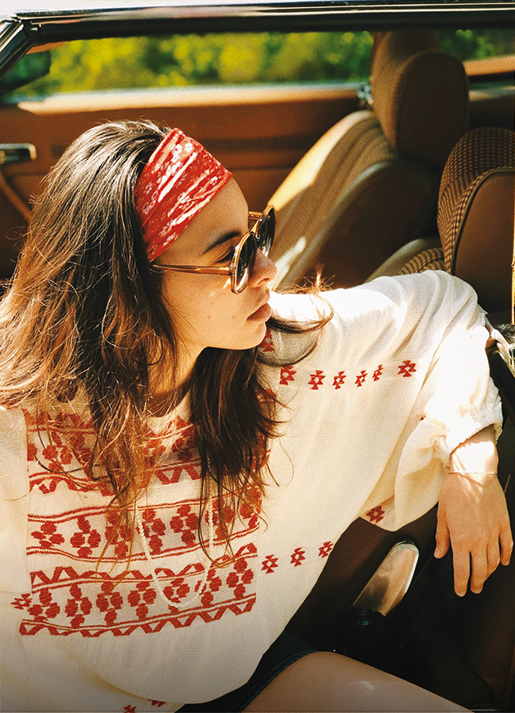
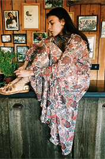
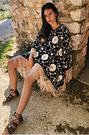
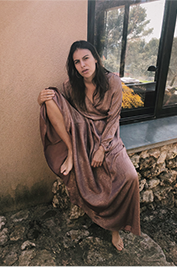
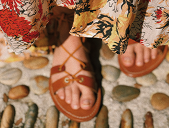
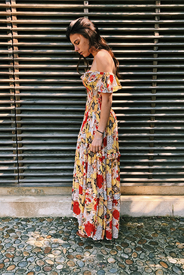
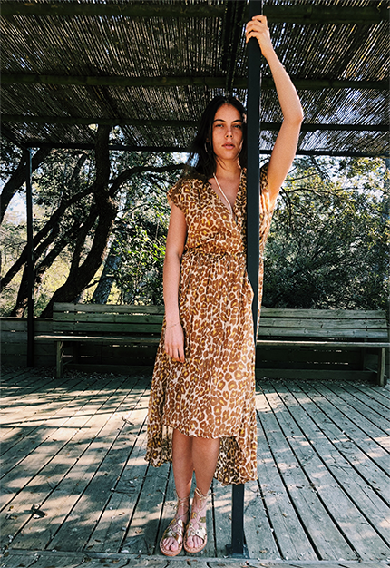

Dans cette période où l'on mesure la chance d'être avec ceux qu'on aime,
Juliette Swildens retrouve sa provence natale
pour une séance intimiste dans sa maison de famille.
Poses complices, lumière dorée, fraîcheur et naturel...
Un bol d'air, mais surtout de sentiments.
Une maxi-blouse en coton rebrodée de motifs folks,
Une jupe longue fluide en lamé or rose,
Un poncho spectaculaire entièrement brodé d'oiseaux et de fleurs...
Swildens, c'est aussi l'art de créer des pièces au style unique qui
signent une allure.



Blouse Ball et Jupe Backler
Poncho Beauvoir
Blouse Bliss et Jupe Bess
Féminines et confortables, nos spartiates à
lacets vont avec absolument tout,
et sont déclinées en trois versions :
cuir doré irisé, noir clouté, et camel naturel.
Le début d'une collection ?



Vifs ou poudré, animaux ou végétaux, trois nouveaux imprimés ornent robes,
jupes et blouses pour enjoliver l'été :
L'audace de notre fameux léopard, réinventé cette saison avec des touches
de couleurs vives,
L'éclat de "Dahlias", vibrant motif inspiré d'un foulard vintage retrouvé dans
une malle familiale de Juliette,
Le romantisme de "Fleurs anciennes", qui revisite avec féminité les dessins
d'anciennes planches botaniques.